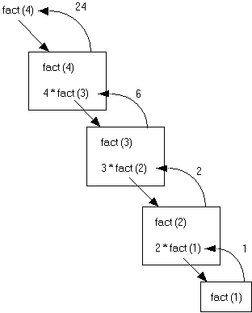

Recursion occurs when a method calls itself to solve a simpler version of the problem. With each recursive call, the problem is different from, and simpler than, the original problem.
Recursion involves the internal use of a stack. A stack is a data abstraction which works like this: New data is "pushed," or added to the top of the stack. When information is removed from the stack it is "popped," or removed from the top of the stack. The recursive calls of a function will be stored on a stack, and manipulated in a similar manner.
The problem of solving factorials is our first example of recursion. The factorial operation in mathematics is illustrated below.
1! = 1
2! = 2 * 1 or 2 * 1!
3! = 3 * 2 * 1 or 3 * 2!
4! = 4 * 3 * 2 *1 or 4 * 3!
Notice that each successive line can be solved in terms of the previous line. For example, 4! is equivalent to the problem 4 * 3!.
A recursive method to solve the factorial problem is given below. Notice in the last line of the method the recursive call. The method calls another implementation of itself to solve a smaller version of the problem.
int fact(int n)
// returns the value of n!
// precondition: n >= 1
{
if (1 == n)
return 1;
else
return n * fact(n - 1);
}
The base case is a fundamental situation where no further problem solving is necessary. In the case of finding factorials, the answer of 1! is by definition = 1. No further work is needed.
Suppose we call the method to solve fact(4). This will result in four calls of the method fact
fact(4): This is not the base case (1 == n), so we return the result of 4 * fact(3). This multiplication will be solved until an answer is found for fact(3). This leads to the second call of fact to solve fact(3).
fact(3): Again, this is not the base case and we return 3 * fact (2). This leads to another recursive call to solve fact(2).
fact(2): Still, this is not the base case, we solve 2 * fact(1).
fact(1): Finally we reach the base case which returns the value 1.
When a recursive call is made, the current computation is temporarily suspended and placed on the stack with all its current information available for later use.
A completely new copy of the method is used to evaluate the recursive call. When that is completed, the value returned by the recursive call is used to complete the suspended computation. The suspended computation is removed from the stack and its work now proceeds.
When the base case is encountered the recursion will now unwind and result in a final answer. The expressions below should be read from right to left.
fact (4) = 4 * fact (3) = 3 * fact (2) = 2 * fact (1) = 1
24 <-- 4 * 6 <-- 3 * 2 <-- 2 * 1
Here is a picture. Look at what happens:

Each box represent a call of function fact. To solve fact(4) requires four calls of function fact.
Notice that when the recursive calls were made inside the else statement, the value fed to the recursive call was (n-1). This is where the problem is getting smaller and simpler with the eventual goal of solving 1!.